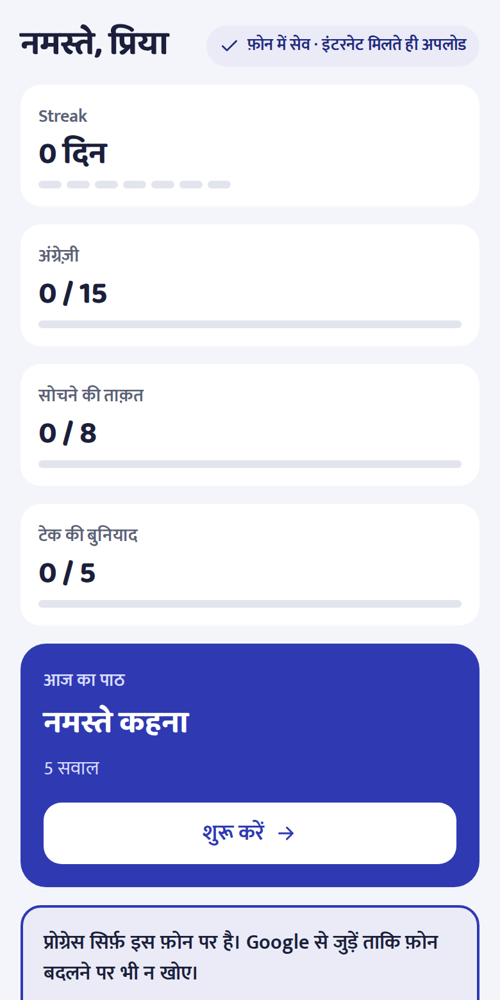
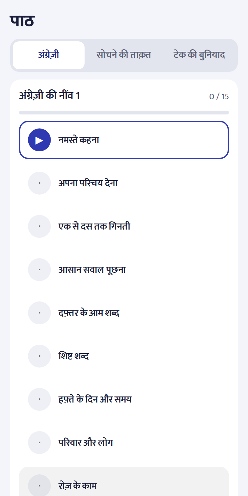
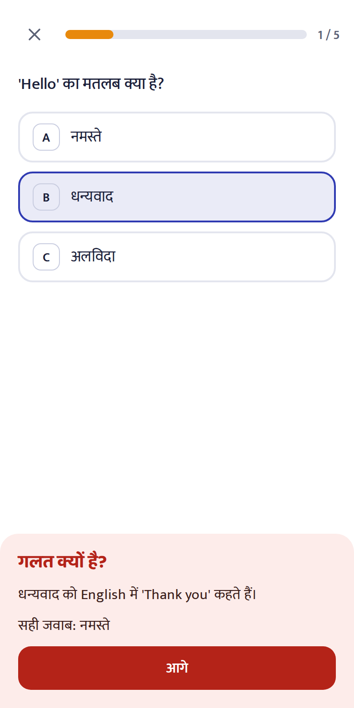

Learning that works offline, in Hindi, on a shared phone.
Built end to end with Claude Code, directed by one developer.
github.com/sabhinav9889/shiksha-path
shiksha-path.pages.dev

Most learning apps assume fast internet, English readers and one user per phone.
Students learn on a cheap shared phone with no internet. Mentors see who is stuck, hear their speaking and book one-to-one time. All of it is built for minors' privacy.
Home
streak, progress, today's lesson, and a "saved on phone" badge

28 lessons, 3 tracks
English 15, aptitude 8, tech basics 5

"Why is it wrong?"
every wrong option has its own reason
Services import no Supabase. A test fails the build if anything else does. Swapping the provider means writing one adapter.
Zod shapes are shared by the app and the server, so a change is checked on both sides in one commit.
The same contract tests run on in-memory repositories and on real Postgres. This caught a bug that only Postgres showed.
One live booking per slot is a partial unique index; the two-booking limit is counted under a row lock; tested at the same moment.
A 120 KB first-load budget checked in CI. Staff, community and booking are lazy chunks, so a student never downloads them.
Microservices, queues, GraphQL, a custom backend server, Realtime. Changing this needs a decision record.
Every pull request also runs gitleaks, semgrep, trivy and npm audit. Strict TypeScript, ESLint size and complexity limits, commit lint.
The question was not "can AI write code". It was "how do I make its output trustworthy enough to give to children's data".
The next four slides show the method: a loop, context, agents and guardrails, and where the human stays in charge.
A test that passed before the code existed was treated as broken. Plans are written so a cheaper model can execute them and the strongest model is kept for review.
| Context | What it does |
|---|---|
| CLAUDE.md, AGENTS.md, GEMINI.md | Source of truth, session start, definition of done. Three files so any AI tool lands in the same place. |
| Nine rule files | Coding, architecture, security, privacy, database, testing, offline sync, AI guardrails, git. Read when a task touches that area. |
| Task router | Which rules and reviewers a kind of task needs. |
| Decision records | Why a thing is the way it is, so the AI does not re-argue it. |
| Gotchas | Mistakes that happened once, written down so they are not repeated. |
| Plans and worklog | Each task states what it consumes and produces, because an executor sees only its own task. |
main and writes to secret files, and format after each editReal bugs came from using the live app: recordings blocked by the browser's security policy, the right answer almost always being option A, an empty recordings list, a missing migration. I also noticed that no lesson used speaking, so I recorded the clips myself.
| What went wrong | Caught by | What changed |
|---|---|---|
| A paging cursor passed every in-memory test and crashed on Postgres | Fresh review | Contract tests run on both repositories |
| Another mentor in the same cohort could read a student's private note | Fresh review | Row-level security fix, test first |
| An older app dropped a new event type and lost it forever | Fresh review | Pull cursor tracks known event types |
| Two students could race for one slot, or two admins delete each other | Review, tests | Database index and locks, tested together |
| Tests used a fake backend and missed the audio being blocked | My use of the live site | Policy fixed, test added |
AI is effective when it is given rules, tests and an independent reviewer, and when a person tests the real thing.
Shiksha Path: learning that works offline, in Hindi, on a shared phone.
Code: github.com/sabhinav9889/shiksha-path
Live app: shiksha-path.pages.dev
Release: tag hackathon-2026-submission